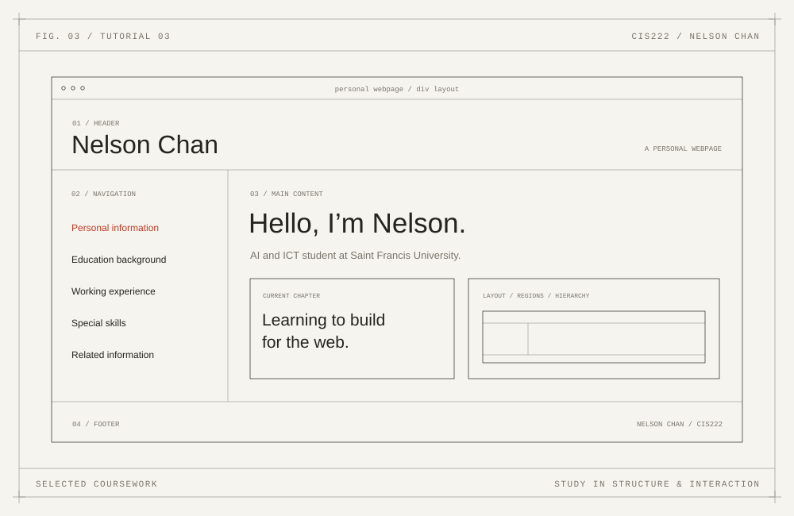
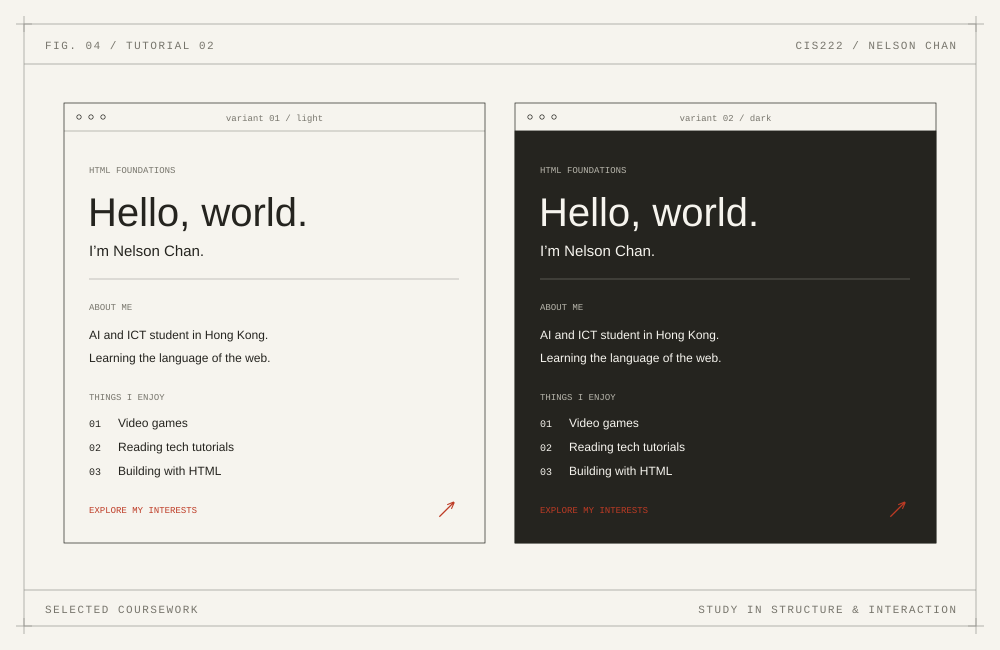

TechCorp, connected.
A company introduction, services section, and registration flow brought together with external CSS.
My actual CIS222 tutorial submissions, presented as a collection of practical learning experiences.
THE PROJECT LIBRARY
Explore an adapted live demo, read what I practised, or download the original submissions. The vector previews are new visual summaries of the work.
Showing all 4 projects
A company introduction, services section, and registration flow brought together with external CSS.

A student registration interface using labelled fields, a course selector, radio buttons, and grouped inputs.

A self-introduction page arranged with DIV containers and a two-column Flexbox layout.

Personal webpages, HTML text and media exercises, and a contact form: the start of my web-design journey.
Original source is preserved in the download. Live demos adapt the supplied work for responsive viewing and accessible, local-only form feedback. Referenced photo, audio, video, and banner assets were absent from the supplied archive; demos use self-contained graphics instead.
REFLECTION / WHAT I LEARNED
The strengths and next steps I can identify in my original work.
I combined a sticky header, anchor navigation, a services list, and an account-registration form in one company landing page. External CSS controls the layout, button hover effects, and box shadows.
Connecting sections into a coherent page and giving buttons consistent visual feedback.
Improve small-screen layouts, keyboard focus, and form feedback.
Open the adapted live demoI created a student registration form with first, middle, and last names, a course selector, gender options, Hong Kong phone prefix, address, email, and password fields. An external stylesheet handles spacing and the full-width register button.
Choosing appropriate form controls and arranging longer input flows with readable spacing.
Strengthen validation, group radio buttons accessibly, and explain what happens after submission.
Open the adapted live demoI used DIV containers for the page header, navigation, main content, and footer. Flexbox arranges the 30% sidebar and 70% content area. The biography introduces my interest in web development, HTML, CSS, gaming, and technical tutorials.
How a layout hierarchy helps separate navigation from content and keeps a page organized.
Make the sidebar stack on narrow screens and replace placeholder navigation targets.
Open the adapted live demoMy Tutorial 2 submission includes lightblue and black versions of a personal webpage, a text/alignment and media-elements showcase, and a contact form. The biography identifies my programme and career objective, lists the people I am thankful for, and ranks my desired jobs.
Structuring a page with headings and lists, linking a document, and choosing HTML input types.
Move presentation into external CSS and provide working fallbacks for missing media.
Open the adapted live demoINSPIRATION / OFFLINE & ON
I enjoy video games and reading technical tutorials.
Both interests keep me close to digital experiences, and encourage me to understand how interfaces are designed and built.
More about my interests ↗TUTORIAL 5 / REAL COURSEWORK
I combined a sticky header, anchor navigation, a services list, and an account-registration form in one company landing page. External CSS controls the layout, button hover effects, and box shadows.
Connecting sections into a coherent page and giving buttons consistent visual feedback.
Improve small-screen layouts, keyboard focus, and form feedback.
Original file: Tutorial 5 Submission/index.html and style.css
WEEK 4 / REAL COURSEWORK
I created a student registration form with first, middle, and last names, a course selector, gender options, Hong Kong phone prefix, address, email, and password fields. An external stylesheet handles spacing and the full-width register button.
Choosing appropriate form controls and arranging longer input flows with readable spacing.
Strengthen validation, group radio buttons accessibly, and explain what happens after submission.
Original file: Week 4 Tutorial Exercise/index.html and style.css
TUTORIAL 3 / REAL COURSEWORK
I used DIV containers for the page header, navigation, main content, and footer. Flexbox arranges the 30% sidebar and 70% content area. The biography introduces my interest in web development, HTML, CSS, gaming, and technical tutorials.
How a layout hierarchy helps separate navigation from content and keeps a page organized.
Make the sidebar stack on narrow screens and replace placeholder navigation targets.
Original file: Tutorial 3 submission/Tutorial_3/ChanKaiYipNelson_S25201381.html
TUTORIAL 2 / REAL COURSEWORK
My Tutorial 2 submission includes lightblue and black versions of a personal webpage, a text/alignment and media-elements showcase, and a contact form. The biography identifies my programme and career objective, lists the people I am thankful for, and ranks my desired jobs.
Structuring a page with headings and lists, linking a document, and choosing HTML input types.
Move presentation into external CSS and provide working fallbacks for missing media.
Original file: Tutorial 2 submission/Project_1, Project_2, and Project_6a
I’m building my path toward web design and software engineering.
Let’s connect about learning, projects, or future opportunities.